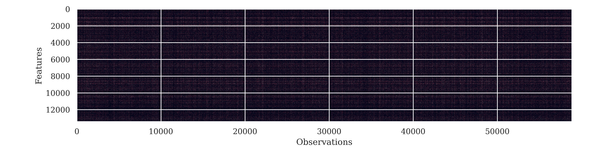
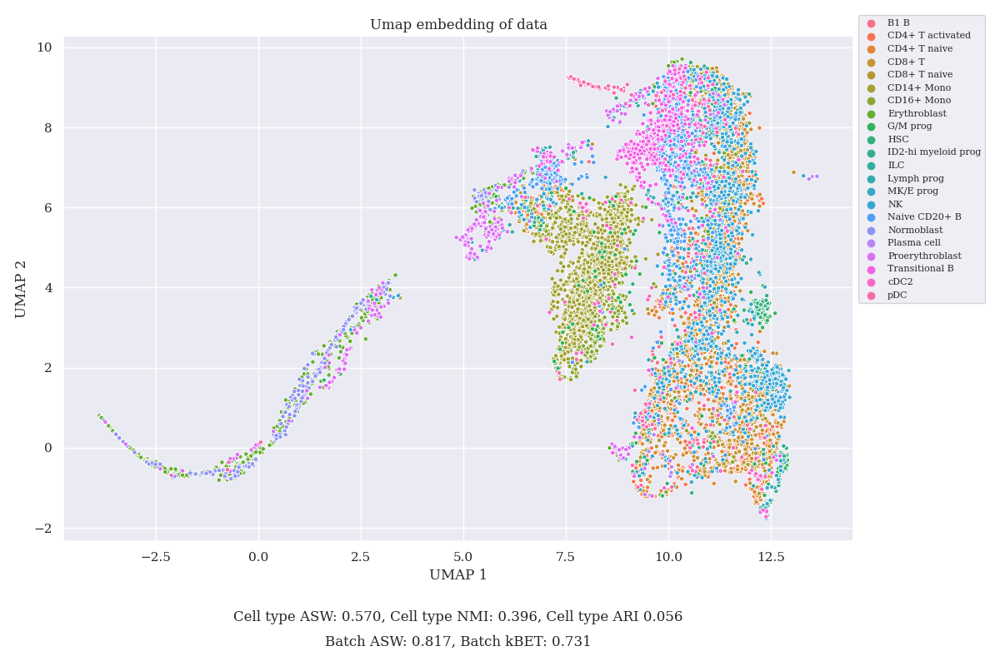
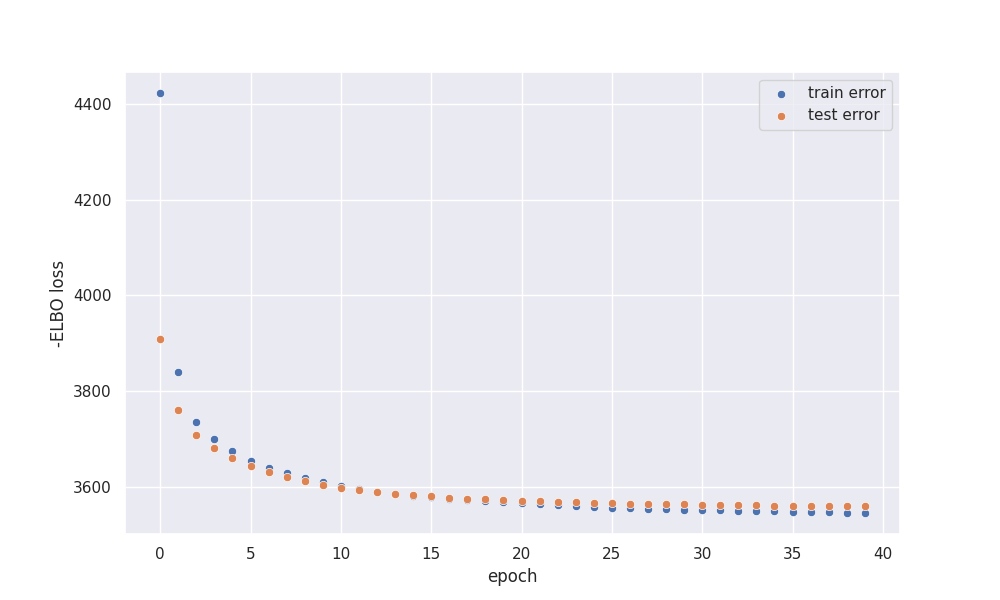
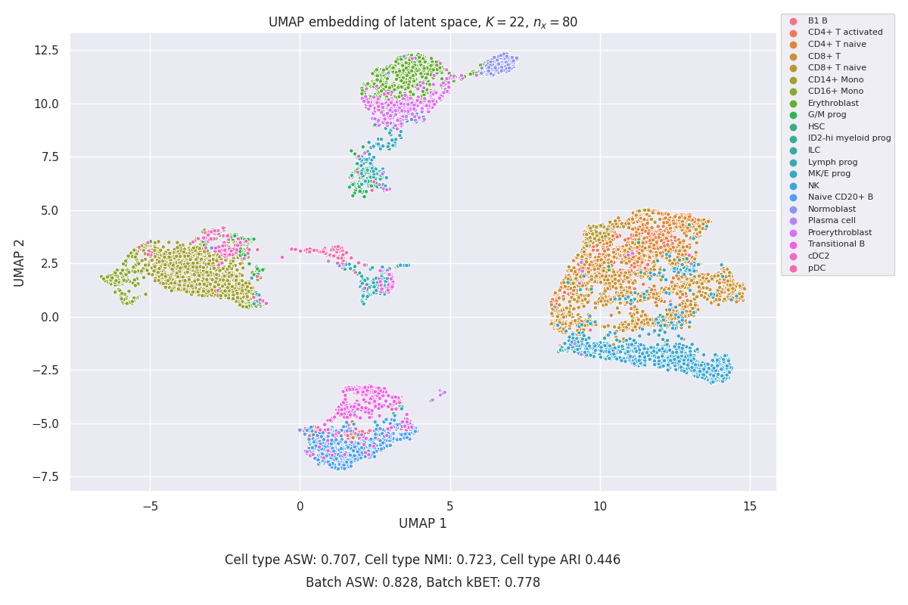

GMVAE clustering applied to RNA sequencing
Introduction
One of many classical tasks of machine learning is clustering, based on the data one would like to distinguish some clusters. There are many classical approaches to clustering, the most notable ones include: K-means, GMM (Gaussian Mixture Model) trained with the EM algorithm, and DBSCAN. While each of those algorithms is widely used in research and industry, all of them try to cluster the data using its original representation and mostly fail in the case of hidden similarity between observations.\ In this post, I present a GMM+VAE deep learning architecture, which will be used to cluster the data based on a learned embedding of the data. The clustering model is based on this paper, while application to RNA sequencing data is based on the work that I performed during my studies at the Warsaw University. The original project with a solution can be found in a related GitHub repository. The dataset used in the study was taken from the NeuroIPS 2021 competition. In this blog, we will tackle the joint embedding part of the competition. We will try to embed biological information in an unsupervised manner and at the same time reduce the impact of batch effect on the model performance.
About VAE
Normal VAE architecture can be understood as a quite simple Bayesian Graphical model that tries to describe data $x\in \mathbb{R}^N$ as a function of some hidden latent variable $z\in \mathbb{R} ^n $. $N$ represents dimensionality of original data, while $n$ stands for dimensionality of latent space. Most basic VAE models can be written as \begin{align} z\sim \mathcal{N}(0,\mathbf{I}) \end{align} \begin{equation} x\sim P(\theta(z)), \end{equation} where $P(\theta(z))$ stands for an arbitrary probability distribution used to model data, while $\theta(z)$ denotes parameters of the aforementioned distribution, which are functions of latent variable $z$ modeled by a neural network. Few useful probability distributions can be used to model the data. However, each distribution should be chosen with the true nature of observation in mind. For example, a most popular distribution that can be used to model images is the independent Bernoulli distribution \begin{equation} P(x_i)\sim Bernoulli(\theta_i(z)), \end{equation} where each pixel is modeled independently from others. This particular choice leads to the binary cross-entropy loss, as one can verify. To perform variational inference, one usually takes multivariate Gaussian posterior with a diagonal covariance matrix modeled by a neural network, which we will denote as $\phi_z$. We will assume that it outputs a set of means $\mu_i$ and variances $\sigma_i^2$. Strictly speaking, our variational family is \begin{equation} q(z_i|x)=\mathcal{N}(\mu_i(x),\sigma_i^2(x)) \end{equation}. After calculations, one can derive a lower bound of our data (ELBO), which can be used as a loss function \begin{equation} \mathcal{L}=-ELBO=-E_q\log{P(x|z)}+\mathcal{D_{KL}}(q(z|x)||p(z)), \end{equation} where $\mathcal{D_{KL}}$ is Kullback-Leibner divergence between the posterior $q(z|x)$ and the prior $p(z)$. Since both prior and posterior are assumed to be Gaussian, it’s very easy to compute both quantities analytically. The exact method used to infer parameters of distributions is very similar to the process of training a normal autoencoder with a small difference in loss and with the addition of a reparametrization trick.
Why should one use a VAE to describe the data? Similarly to normal autoencoders, one can expect that if two observations are closely related, they will be also closely related in latent space, allowing to perform some sort of dimensionality reduction. This observation leads to the assumption, that latent space should be a good place to look for similarity in our data, which is it’s not always true. In many cases, latent space is entangled and it’s hard to perform any type of clustering.
GMVAE
How do design the model?
To overcome the aforementioned difficulties with the disentanglement of latent space, we can write down a slightly modified model. Previously, we had prior that was inherently compact, as the Gaussian with zero means tends to cluster everything together. Let’s use instead a GMM as the prior distribution. How we can write it down? Let’s change notation, as we will need many latent variables to write down the model. First of all, we want to model our observations which we will denote as $y$. We want to model data using latent variables $w\in \mathbb{R}^{n_w}$, $z\in [0,1]^K$ and $x\in \mathbb{R}^{n_z}$ as \begin{equation} w \sim \mathcal{N}(0,\mathbf{I}) \end{equation} \begin{equation} z\sim Mult \bigg(\frac{1}{K},\ldots,\frac{1}{K}\bigg) \end{equation} \begin{equation} x|w,z\sim \Pi_{k=1}^{K} z_k \mathcal{N}(\mu_{z_k}(w,\beta),diag(\sigma_{z_k}(w,\beta))) \end{equation} \begin{equation} y\sim P(\theta(x)) \end{equation} How to understand this model? First of all, parameters of our Gaussian distributions are generated using latent variable $w$ which is passed through the neural network with parameters $\beta$. There is also a latent variable $z$, which chooses which cluster is selected, like in the traditional GMM model. Those two parameters are used to construct prior distribution for our final latent variable $x$, which is used together by neural network $\theta$ to parametrize the final probability distribution. There are a few pros of this approach, the most important one can be seen when we write down our variational family for inference. Following the original approach, the variational family can be written as \begin{equation} q(x,w,z|y)=q_{\phi_w}(w|y)q_{\phi_x}(x|y)p_\beta(z|x,w) \end{equation} where $\phi_x$ and $\phi_x$ denote neural networks used in the inference process (as previously, they parametrize means and variations of Gaussian posterior). In order to obtain posterior on $z$, which is denoted as $p_\beta(z|x,w)$, we can write \begin{equation} p_\beta(z_i=1|x,w)=\frac{p(z_i=1)p(x|z_i=1,w)}{\sum_{j=1}^{K}p(z_j=1)p(x|z_j=1,w)}. \end{equation} We can see that we have no explicit inference process concerning $z$! This is quite important as it’s much harder to sample from categorical distributions in a way that will allow to propagation of a gradient. There are a few approaches, one of them is the Gumbel-softmax reparametrization trick introduced in this paper.
Loss function
As usual, we write down our loss function -ELBO \begin{equation} \mathcal{L}=-E_q \frac{p_{\beta,\theta}(x,y,w,z)}{q(x,w,z|y)}=-E_q\log{p(y|x)}+\mathcal{D}_{KL}(q(w|y)||p(w))+ \end{equation}
\begin{equation} E_{q(x|y)q(w|y)} \mathcal{D}_{KL}(p(z|x,w) || p(z) )+ \end{equation}
\begin{equation} E_{q(w|y)p(z|x,y)}+\mathcal{D}_{KL}(q(x|y)||p(x|w,z)) \end{equation}
The first two terms represent something we had earlier, KL between prior for $w$ and posterior, and reconstruction loss. The third term represents KL between posterior and prior for $z$, but we have categorical distributions rather than Gaussian ones. In the end, we have something that one can write down as a conditional prior term, it represents how our posterior on $x$ is different from our GMM model. We can write down this term as \begin{equation} \sum_{i=1}^{K}p(z_i=1|x,w)\mathcal{D}_{KL}(q(x|y)||p(x|w,z_i=1)) \end{equation} This is easy to compute as we have KL between two Gaussian distributions. When we see what our loss function looks like we can look at our data.
Gene expression data
The dataset used in this study was taken from the benchmark set of the competition. Cite data was used with gene expression (GEX) features only. Our dataset consists of expression measurements of $13431$ genes. There are $58861$ observations in the training set and $10388$ in the test set. The dataset was collected from $10$ donors at $4$ lab sites for $22$ different cell types. The dataset is heavily zero-inflated as $91%$ of data is zero. We have $13$ unique combinations of donors and lab sites, which will be important later. Our measurements are expressed in counts, mean value of the test set is $0.14$ while the standard deviation is $2.38$. We can see what our data looks like on the heatmap below. Our data is dominated by zero, each positive measruments is colored and the image is almost dark.
In the Figure below, the UMAP embedding of the test data is presented together with the measures of clustering described in the next section (colors by cell type). It’s visible that the clustering does not match cell type well and it lacks a lot of features.
Tackling batch effect
As previously mentioned, there are $13$ the distinct ID of the batch, there is great probability that instead of clustering based on purely biological causes we would obtain clustering based on those batches. To overcome this, instead of modeling $p(y|x)$ we model $p(y|x,b)$, where $b$ is a one-hot encoded vector of batch ID. This hopefully will help to clear latent space $x$ from any external effects allowing to catch only biological activity.
Implementation of model
To implement GMVAE PyTorch library was used. Here, it was decided that the dimensionality of data was $n_x=80$, $n_z=60$ while a number of clusters was set to $K=20$. As the data we are dealing with is discrete, we can model it using a Negative Binomial distribution with parameters $p\in [0,1]$, $r\in \mathcal{R}^+$. Total likelihood can be described by the formula: \begin{equation} P(x=k|r_i,p_i)={k+r-1\choose k}(1-p)^k p^r \end{equation} As there are two parameters to specify, we need two heads with dimensionality $13431$ each, to output parameters of the distribution.
The Decoder and encoder of our VAE were $2$ layers deep with parameters:
- Encoder: $13431-300-250$ followed by 2 heads with dimensionality $2n_x$ and $2n_w$ used to describe posterior of $x$ and $w$
- Decoder: $n_x+12-250-300$ followed by 2 heads with dimensionality $13431$
- Beta neural network: $n_w-300-4Kn_x$
Each layer was followed by gelu activation, layer normalization, and dropout with $p=0.05$. We have a few observations with high value. Hence, we need to scale down our data to zero mean and variation of $1$, otherwise we will encounter problems with overflow. GMVAE is trained using Adam optimizer with initial learning rate $0.001$ for $40$ epochs, learning rate multiplied by factor of $0.7$ after $25$ epochs. For every batch, a gradient is estimated using $M=10$ Monte Carlo samples allowing for much more stable training. The following architecture was found to be the best after a few tries, as it’s the biggest model that’s only slightly overfitting.
Measuring performance of the embedding
There are many ways to measure whether the embedding works well. To keep things simple, five particular measures will be used. Most scores are based on original score methods. Three of them measure the effect of clustering, while the remaining two measure the impact of the batch effect on clustering:
- Average Silhouette Width for cell type
- Normalized Mutual Information between Leiden clustering on embedded data and cell type
- Adjusted Rand Index between K means clustering and cell type
- Batch adjusted Silhouette Width
- kBET
Almost all of those scores were calculated using scib Python package. Batch-adjusted Silhouette Width together with kBET tries to measure whether the embedding does not depend on batch ID. Detailed information on those methods can be found using the aforementioned link. Both NMI and Rand index are computed by clustering embedded space with algorithm (Leiden or means), and then trying to find for which clustering configuration the best value of the measure is achieved. Leiden algo is performed using resolution ranging from $0.1$ to $2.0$ with the spacing of $0.1$, while means is performed for different cluster numbers from $1$ to $22$. As those measures aren’t optimized, we can expect that they will vary a lot. To determine which configuration works best for each training is repeated $6$ times.
Results
To determine how cluster number influences the performance of clustering, grid search over a number of clusters $K$ was performed. As we expect clustering to work best for $K=22$, calculations were performed for $K$ equal $1$, $10$, $20$, $30$, $40$ and $50$. We would like to cover a vast range of possible values together with those much higher than $22$. The following table shows how to measure values depending on the number of clusters:
| K | ARI | ASW | NMI | Batch ASW | kBET | $-ELBO$ |
|---|---|---|---|---|---|---|
| $1$ | $0.359\pm 0.028$ | $0.724\pm 0.005$ | $0.666\pm 0.014$ | $0.793\pm 0.004$ | $0.802\pm 0.013$ | $3582$ |
| $10$ | $0.415\pm 0.032$ | $0.680\pm 0.015$ | $0.728\pm 0.017$ | $0.828\pm 0.004$ | $0.807\pm 0.030$ | $3578$ |
| $20$ | $0.394\pm 0.029$ | $0.679\pm 0.014$ | $0.716\pm 0.010$ | $0.822\pm 0.007$ | $0.809\pm 0.030$ | $3578$ |
| $30$ | $0.402\pm 0.037$ | $0.705\pm 0.011$ | $0.716\pm 0.009$ | $0.824\pm 0.003$ | $0.799\pm 0.022$ | $3579$ |
| $40$ | $0.395\pm 0.021$ | $0.683\pm 0.014$ | $0.724\pm 0.007$ | $0.825\pm 0.005$ | $0.825\pm 0.019$ | $3580$ |
| $50$ | $0.383\pm 0.040$ | $0.707\pm 0.017$ | $0.710\pm 0.007$ | $0.820\pm 0.007$ | $0.795\pm 0.008$ | $3581$ |
It’s visible that the model benefits from configurations with many clusters, using $K>1$ we can achieve much better results. Surprisingly, the best model does not use $K=20$ as one can expect, although differences between models are quite small and not statistically significant. On the other hand, $-ELBO$ is much more stable and indicates that best values are achieved for $K<30$. There is also one thing that should be noticed. Even if the total loss is rather stable and does not change across repetitions, $z$ prior loss is changing. Moreover, it’s slightly correlated with the aforementioned measures of clustering.
Over-regularisation?
Sometimes VAE exhibits behavior called overregulation, when the prior term is so strong that it overpowers reconstruction loss. This affects GMVAE as well and manifests itself in the form of huge degenerate clusters as shown in the original paper. One of the solutions to the problem is to switch on regularization over $z$ latent variable only when $z$ prior loss is bigger then some constant $\lambda$. Strictly speaking \begin{equation} \mathcal{L}=max(\lambda,\mathcal{D}_{KL}(p(z|x,w) || p(z) )) \end{equation} The idea is simple, we start with no effective loss for $z$ prior and try to spiral down into a more optimal solution, and then turn loss above some value. Unfortunately, this study failed to capture if using nonzero $\lambda$ can help with clustering. To see whether the results would be better one needs to gather more data to train.
Sample Results
In the end, UMAP embedding on one particular setting is presented together with the loss curve. $K=22$ was selected as it’s equal to the cell number in the dataset.  At the end of the training, our model is slightly overfitted which isn’t surprising, as we have high dimensional input. Nevertheless, training error does not increase during training.  We can see that the embedding is much better in resolving particular cell types than UMAP on pure data.
Conclusions
In the presented work performance of GMVAE was analysed with regard to the unsupervised clustering task. Negative binomial distribution was used to model gene expression data, resulting in a quite good embedding of biological signal together with suppression of batch effect. The whole model with associated code can be found in github repository.